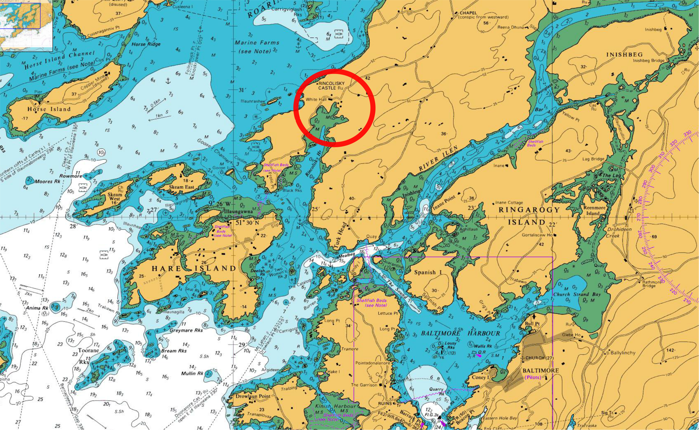
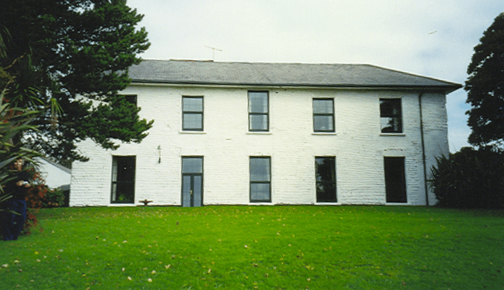
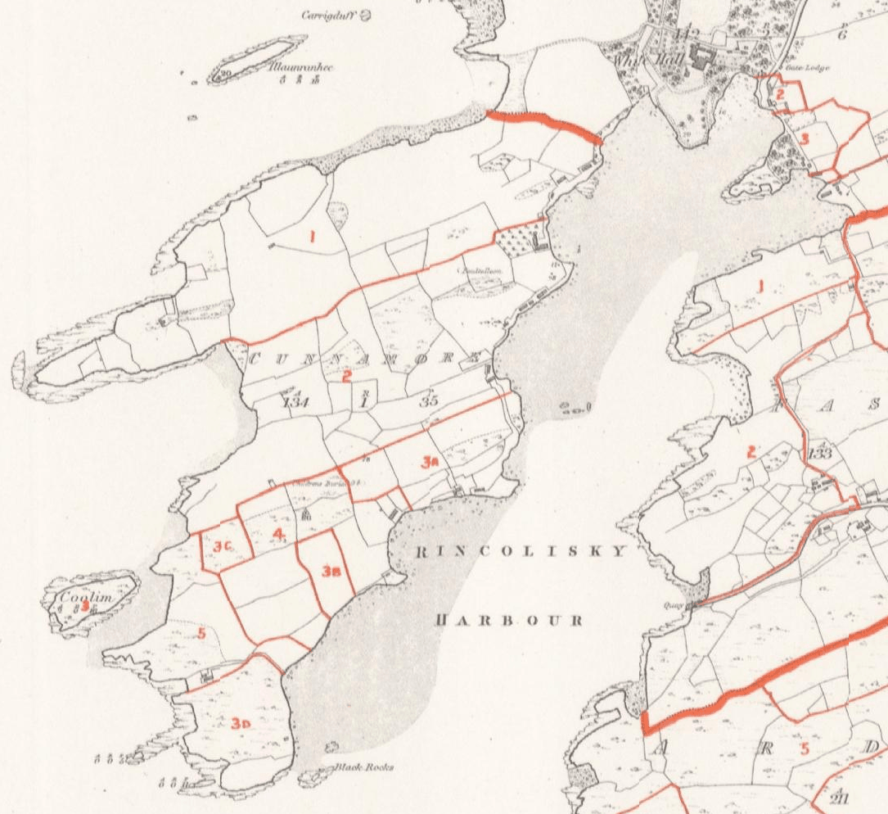
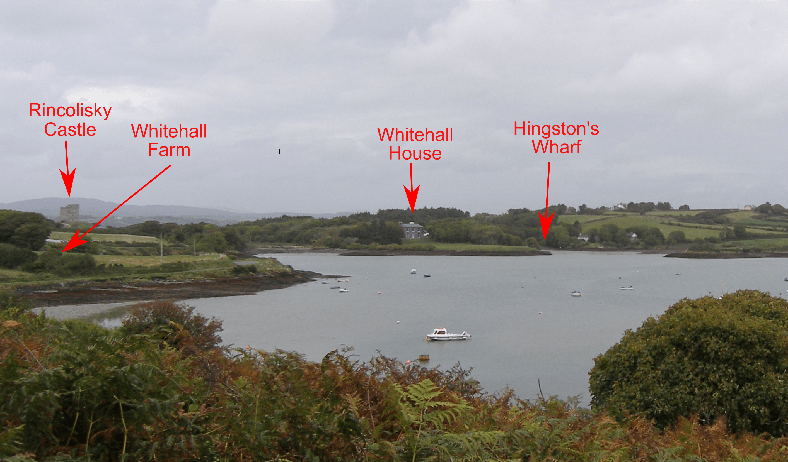
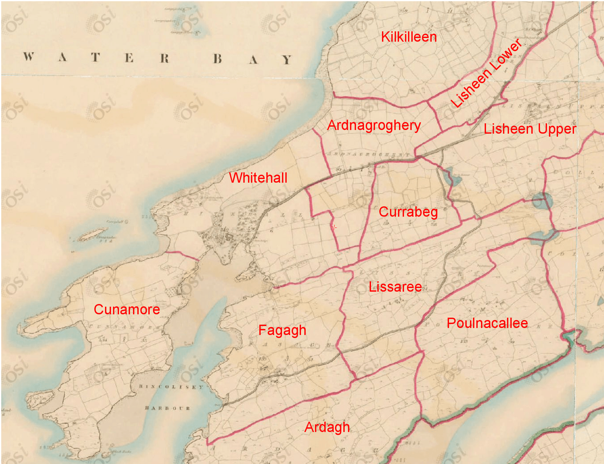

Our records show that the Hingstons in Tree HNC lived at Whitehall in West Cork. Where is it?
Whitehall belongs to the sea as much as the land; in the days before the train and certainly before the car, travel by sea was generally faster and more reliable than travel by land. It stands at the head of Rincolisky Harbour, almost at the extreme south west of Co. Cork. Just across the narrow isthmus to the north is the aptly named Roaringwater Bay. This bay is open to the south west, giving no shelter from the southwesterly gales that blow in from the Atlantic. But Rincolisky is sheltered by islands, particularly Hare Island, which should make it an attractive anchorage. However, the sailing instructions for entering the harbour warn of complex tidal streams, narrow unmarked channels and hidden underwater rocks; in bad weather and in a sailing vessel it must have been an awkward approach.
A few kilometres south is the port of Baltimore. It was one of the principal centres of the O'Driscoll clan, but in about 1605, with the blessing of King James, an English colony was founded here by Sir Thomas Crooke, after whom Crookhaven is named. Many of the English settlers were former seamen, unemployed after the Anglo-Spanish War that had just finished, and many took up piracy. The remoteness of south west Ireland, the availability of many small ports and the blind eye or outright connivance of those in authority led to Baltimore's reputation as a nest of pirates. The town was itself sacked in 1631 by Barbary pirates who raided the port and carried off most of the population into slavery; few if any, returned. The rest of the population fled to places like Skibbereen.
After Crooke's death leadership passed to the Coppinger family. One of their seats was Rincolisky Castle which stands on a small hill overlooking both the harbour of the same name and Roaringwater Bay. It lies in the Townland of Whitehall.
Rincolisky Castle , originally a 5 storey high, square tower house, was built in 1495 by the O'Driscoll clan. A PhD Thesis by M.W.Samuel gives a lot of detail about the form and function of Tower Houses, including Rincoliskey. He considers that they were primarily for show or observation and to protect those inside, so it is little surprise that, in 1602, after the Battle of Kinsale, the castle was easily taken by English forces. It was then given to Sir Walter Coppinger. He changed the name of the castle to Whitehall, after the townland in which it is situated. A new mansion, Whitehall House, was built nearby using material removed from the upper three floors of the Castle. From then on the truncated 2 storey high remnant of Rincolisky Castle fell to ruin. It is said that there is a tunnel leading from the castle to the mansion.
The Coppingers chose the wrong side by supporting James II against William of Orange and lost their possessions in 1690. Whitehall and the Castle were subsequently acquired by Samuel Townsend. In 2000 the ivy covered ruin of Rincolisky Castle was restored and made habitable again and is now a holiday home.
Whitehall House is at 51.515642 North, 9.413710 West
It is not clear who built Whitehall House. Some sources say it was the Coppingers; others say it was the Townsends.From a website about the house.

When Samuel Townsend acquired Whitehall it must have been strange for him, the grandson of a Parliamentarian (Colonel Richard Townesend), to own an estate forfeited by his cousin because of his religious beliefs. Elected a Freeman of Clonakilty in 1717, appointed a Justice of the Peace in 1737 and High Sheriff of Cork 1742, Samuel made significant alterations to Whitehall following his extensive travels in Italy. When he died in 1759 he left the property to his eldest son, Edward Mansel Townsend (known to his kinsmen as 'Splendid Ned'), who did much to improve the estate when he was forced to give up hunting in his later years. He became a great agriculturalist and horse breeder.
Horatio Townsend describes Whitehall on page 342 of his book 'Statistical Survey of the County of Cork' - "Whitehall, the seat of Samuel Townsend, Esq. stands on the east side of Rincolisky, or Roaringwater Bay. It enjoys every advantage of land and water, but from the nature of its situation is unfavourably circumstanced for the growth of trees. The upper part of the ground commands one of the grandest prospects to be found any where, an immense expanse of water extending from Cape Clear on one side to the Mizen-head upon the other. The depth of this great bay is proportioned to its breadth, its shores are diversified by many jutting points and headlands, on several of which are ruined castles, and its ample bosom is inlaid with a great number of verdant islands, of different sizes and shapes. The cape forms a fine termination to the land view on the left, and the rocky summit of Mountgabriel appears to great advantage in the back ground on the right. Some of the islands are large, and contain a great many inhabitants; others small, and used only for summer feeding, are remarkable for the richness of their pasture. Exclusive of these considerations, they are extremely useful in breaking the force of the sea, and forming many secure stations for vessels."
It is clear that the house remained in the ownership of the Townsend family well into the 19th century. So the Hingstons never lived in the house.
If the Hingstons didn't live at the big house, where did they live? The Cunnamore peninsula extends south west from the house. It was a Townland and appears to once have been divided into 3 farms. The central one was known as Middle Cunnamore but is now called Whitehall Farm.

The map above is from Griffiths valuation. David Cotcher has studied the occupation of land by various Hingston families in the area; they were tenants rather than owners.
It is notable that there appears to have been no road access to the Cunamore peninsula, and there is no sign of a track around Whitehall House. Access to these farms must have been by boat or by going around the big house, so the Hingstons must have had a good working arrangement with the Townsends. There is now a narrow road hugging the eastern shore of the harbour, and leading to a small wharf at the tip of the peninsula.


Many of the Hingstons gave Cunamore or Whitehall as their residence, but later members of the family lived in nearby towns or villages, and many farmed in the neighbouring townlands, most notably Lisheen.
We believe that HN#79. William Hingston settled at Whitehall in 1729, from where he took up mackerel fishing and coastal trading. We don't know where he came from or who his father was, but we suspect he was linked in some way to the Hingstons of Aglish who were the descendants of HN#4. Major James Hingston who served in the Parliamentary Army. We know that James had at least two other sons, Richard of Kinsale and William of Mallow about whom we know very little; they may well have had offspring and would be the right age to be 79.William's grandfather.
Rincoliskey is a strange place to set up a maritime business. It is a sheltered anchorage but with an awkward approach. It is close to good fishing grounds but has no hinterland, so any fish would have been landed elsewhere. There are no major, or even minor towns nearby, so there would not have been much in the way of coastal trade. There is a small wharf there, and beaches where boats could have been hauled out of the water, but no obvious signs of the trades normally associated with even small ports, so only light maintenance could have been carried out. By the time William moved there the Royal Navy was in proper control so piracy had been eliminated, and although there would have been plenty of opportunities for some light smuggling the absence of local customers probably limited its scope. They may also have farmed the land, but the soil is thin and probably saturated with salt spray; it is nothing like the lush fields around Aglish, for example.
4. Major James may well have served in Cork with Colonel Townesend at the time of the Civil War, so the Hingston and Townsend families may well have known each other. So was 79. William from a junior branch of the Hingston family who was given access to land at Whitehall by the Townsends? It doesn't look as though the Townsends farmed the land or traded themselves, so they may have wanted friendly tenants or neighbours.
Alternatively, although possibly less likely, the Coppinger family had lands in Cornwall. Were any of these near St Ives? There was a William Hingston, son of HM#2. Baldwin Hingston , born near St Ives in 1703, about whom we have no subsequent history. It's a long way from St Ives to Whitehall by land but a short sea crossing and St Ives is a fishing port.
It is possible that there was no relationship between the families at all, and that 79. William bought or rented Whitehall Farm from the Townsend family as a straightforward commercial deal. But it is probably worth checking the available records.
Return to Hingston One-Name Study
Added 15th February 2021. Chris Burgoyne